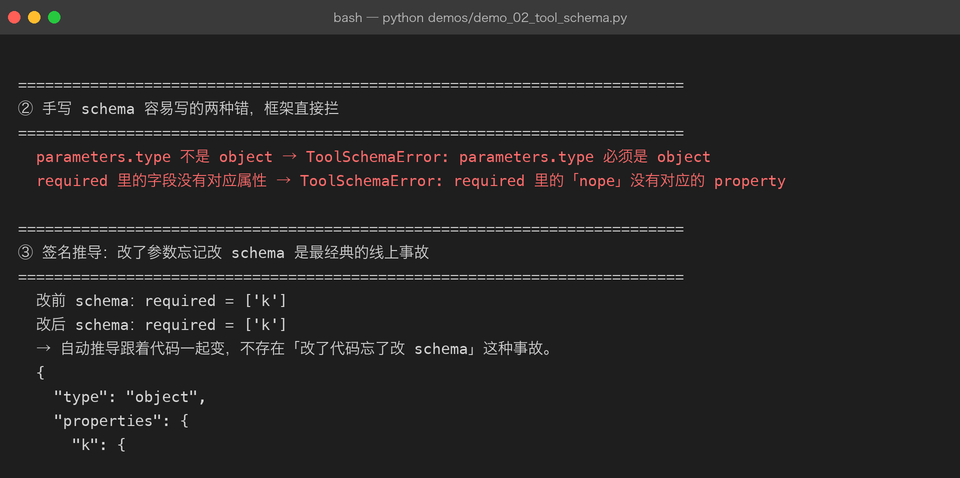
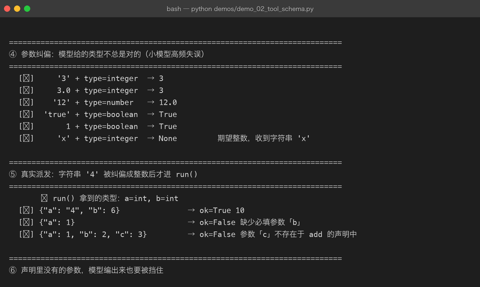

Milestone 02 — Tool Schema：模型看到的「函数说明书」
Milestone 01 把工具建出来了。但模型不知道这些工具长什么样，它只看到一组 JSON。这一章讲清三件事：一段合格的 schema 长什么样、模型给错参数时怎么办、以及「声明」和「代码」怎么保持一致。
1. 模型真正看到的东西
{
"type": "function",
"function": {
"name": "calculator",
"description": "计算算术表达式（支持 + - * / // % 与括号，不支持变量和函数）。",
"parameters": {
"type": "object",
"properties": {
"expression": {"type": "string", "description": "算术表达式，例如 (12+8)*3/7"}
},
"required": ["expression"]
}
}
}四层结构，一层都不能少：工具对象 → type: "function" → function 对象 → parameters。
description 不是装饰。它直接决定模型会不会用这个工具——写成「算数」的工具，模型问「今天几号」时也可能去调它；写成「返回当前 UTC 时间」的精确描述，误调用会明显下降。工具描述是提示词的一部分。
2. 两种手写错误，框架直接拦
function_schema("broken1", "描述", {"type": "string"})
# → ToolSchemaError: parameters.type 必须是 object
function_schema("broken2", "描述", {"type": "object", "properties": {}, "required": ["nope"]})
# → ToolSchemaError: required 里的「nope」没有对应的 property第二条尤其关键：required 里写了一个不存在的字段，在离线测试里永远测不出来，只有真调服务时才会 400。放在构造阶段拦，是最便宜的位置。

3. 签名推导：消灭「改了代码忘了改 schema」
def search_old(k: int) -> str: ... # required = ['k']
def search_new(k: int, mode: str = "fast") -> str: ... # required = ['k']，新增 mode 且非必填function_to_schema() 用 inspect.signature 读注解，映射规则：
| Python 注解 | JSON type |
|---|---|
str | string |
int | integer |
float | number |
bool | boolean |
list / list[str] | array |
有默认值的参数自动不进 required。 手写 schema 时最常见的疏漏就是把所有参数都写进 required，导致模型被要求填一个明明有默认值的字段。
4. 参数纠偏：小模型的高频失误
模型给的参数不总是对的。真实项目里最常见的修法是自动纠偏，而不是报错：
[✓] '3' + type=integer → 3
[✓] 3.0 + type=integer → 3
[✓] '12' + type=number → 12.0
[✓] 'true' + type=boolean → True
[✓] 1 + type=boolean → True
[✗] 'x' + type=integer → None 期望整数，收到字符串 'x'为什么纠偏比报错划算：模型把整数写成 "3" 时，如果直接抛错，它会陷入「重试—报错—重试」的空转，把步数烧光；而纠偏是不改变语义的修复，一次就过。
两个必须注意的边界：
- 布尔不是整数。
True是int的子类，不拦的话True会被纠偏成1。 - 纠不动就报类型错误，不要猜。猜错的参数比不猜更糟。

5. 真实派发：纠偏发生在 run() 之前
result = reg.call(ToolCall(id="c", name="add", arguments={"a": "4", "b": 6}))
# ↳ run() 拿到的类型：a=int, b=int
# [✓] {"a": "4", "b": 6} → ok=True 10
# [✗] {"a": 1} → ok=False 缺少必填参数「b」
# [✗] {"a": 1, "b": 2, "c": 3} → ok=False 参数「c」不存在于 add 的声明中三类失败各有各的回灌文案，因为它们对模型的含义不同：
| 情况 | 回灌文案 | 模型该怎么做 |
|---|---|---|
| 未知工具 | 未知工具「x」。当前可用：… | 换成真实工具名 |
| 缺必填 | 缺少必填参数「b」 | 补上 |
| 参数不存在 | 参数「c」不存在于 add 的声明中 | 删掉，别编 |
文案里带上「当前可用工具列表」是关键——否则模型只能瞎猜。
6. 坑与结论
坑 1：schemas() 返回的是工具对象，不是内层 function。 早期实现里 schema_of() 返回的是内层 {name, description, parameters}，schemas() 直接把它当数组发出去。服务端一直回 422 missing field 'type'，而且离线 mock 完全复现不出来。修法：
def schemas(self):
return [{"type": "function", "function": self.schema_of(n)} for n in self.names()]坑 2：中文检索不能用 \w+ 切词。 \w 在 Python 里能匹配汉字，所以「会话怎么落盘」会被当成一个整串，和语料里的「会话与多轮」永远对不上。本项目对连续汉字段额外切二元组（会话/话怎/怎么/么落/落盘），命中一个即部分相关。这是不引入分词库时的最小可行方案。
坑 3：英文词要做前缀匹配，但不能子串匹配。 输入 project 要能命中 project01 这类标记；但查询里的 in 绝不能被 em**bedding** 命中——否则任何噪声查询都永远有结果，检索工具就废了。
结论：
- schema 是给模型看的说明书，
description属于提示词的一部分。 - 参数纠偏优先于报错，但布尔 ≠ 整数。
- 自动推导 schema 让「代码和声明不一致」从根上消失。
7. 代码位置
| 文件 | 职责 |
|---|---|
src/agent/tools.py | function_schema() / function_to_schema() |
src/agent/registry.py | _coerce() / _prepare_kwargs() / assert_valid_schema() |
8. 版本
v0.2 → v0.3，新增 12 项 schema 与纠偏相关测试，截图 2 张。